בעיות סיפוק אילוצים — ניסוח ו-Backtracking
⏱ זמן משוער: 65 דק'
0. האינטואיציה — חיפוש עם "מבנה פנימי"
עד כה כל בעיית חיפוש שפגשנו הייתה "קופסה שחורה": מצב, פונקציית עוקב, מבחן מטרה — בלי לדעת מה בפנים. בעיית סיפוק אילוצים (Constraint Satisfaction Problem — CSP) שונה: המצב עצמו בנוי ממשתנים שכל אחד מקבל ערך מתוך תחום מוגדר, ו"חוקיות" ההשמה נקבעת ע"י אילוצים בין המשתנים. חשיפת המבנה הזה היא בדיוק מה שמאפשר לבנות אלגוריתמים כלליים ויעילים במיוחד — ולכן CSP הוא אחד משלושת סוגי השאלות הפתוחות בחלק ב' של המבחן (לצד לוגיקה וחיפושים/משחקים).
הדוגמה הקלאסית שתלווה אותנו לאורך כל הפרק: לצבוע את מפת אוסטרליה בשלושה צבעים כך ששום שתי מדינות שכנות לא יקבלו אותו צבע. פשוט לומר, לא פשוט לפתור ביעילות — וזה בדיוק מה שהופך את CSP למודל שימושי כל כך: בעיות הקצאה, לוחות זמנים, תזמון ייצור וטיסות, ואפילו תזמון הצילומים של טלסקופ החלל Hubble — כולן נופלות לאותו תבנית.
מקור: 07-csp.pdf (עמ' 1–5)
1. דוגמה מרכזית — צביעת מפת אוסטרליה
נרצה לצבוע את מפת אוסטרליה בצבעים אדום, ירוק וכחול, כך ששתי מדינות סמוכות לא תיצבענה באותו הצבע. הגדרת הבעיה כ-CSP דורשת לענות בדיוק על שלוש שאלות: מהם המשתנים, מהם התחומים, ומהם האילוצים.
- Variables: WA, NT, Q, NSW, V, SA, T — שבע המדינות/הטריטוריות.
- Domains: {red, green, blue} לכל משתנה.
- Constraints: {WA≠NT, WA≠SA, NT≠SA, NT≠Q, SA≠Q, SA≠NSW, SA≠V, Q≠NSW, NSW≠V} — כל זוג מדינות שחולקות גבול.
פתרון לדוגמה: WA=red, NT=green, Q=red, NSW=green, V=red, SA=blue, T=green. אפשר לוודא ידנית שכל זוג שכנים ברשימת האילוצים אכן קיבל צבעים שונים.
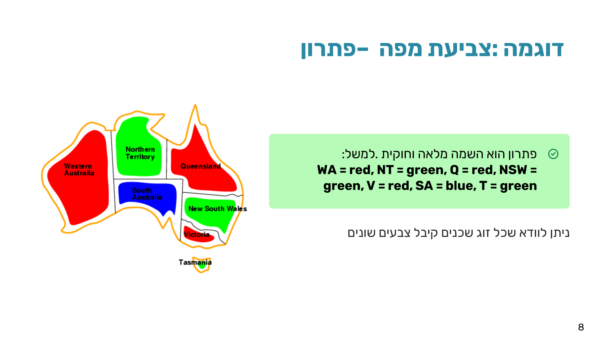
מקור: 07-csp.pdf (עמ' 4, 6–8)
2. דוגמה נוספת — Cryptarithmetic: SEND + MORE = MONEY
כדי לוודא שהמיומנות "לנסח CSP" כללית ולא ספציפית למפות, בואו ננסח גם חידת קריפטאריתמטיקה קלאסית: כל אות מייצגת ספרה שונה (0–9), והמשוואה האריתמטית חייבת להתקיים:
S E N D + M O R E ----------- M O N E Y
גם כאן נבחן וריאציה עם ספרות נשא (carry) מפורשות מעל העמודות, כדי לתרגם את החיבור בעמודות לאילוצים אלגבריים מדויקים:
- Variables: S, E, N, D, M, O, R, Y (האותיות) ו-X1, X2, X3 (ספרות נשא בין עמודות).
- Domains: {0–9} לאותיות; {0,1} לנשאים X1, X2, X3.
- Constraints:
- Alldiff(S,E,N,D,M,O,R,Y) — כל האותיות ספרות שונות.
- D+E = Y+10·X1 (עמודת האחדות)
- X1+N+R = E+10·X2 (עמודת העשרות)
- X2+E+O = N+10·X3 (עמודת המאות)
- X3+S+M = O+10·M (עמודת האלפים)
- M≠0, S≠0 — ספרה מובילה אינה 0.
מקור: 07-csp.pdf (עמ' 9–12)
3. ניסוח CSP כבעיית חיפוש סטנדרטית
כמו בכל בעיית חיפוש שראינו (זוכרים את התבנית מהיחידה על ניסוח בעיות חיפוש? מצב, עוקב, מבחן מטרה, עלות), גם CSP אפשר וכדאי לנסח כבעיית חיפוש — רק שכאן המצב מוגדר ע"י ערכי ההשמה הנוכחיים:
- מצב התחלתי — השמה ריקה: אף משתנה לא קיבל ערך.
- פונקציית עוקב — נתינת ערך חוקי (instantiation) למשתנה שטרם הושם, שאינו מפר אילוץ.
- מבחן המטרה — השמה מלאה וחוקית: כל המשתנים קיבלו ערך ולא מופר שום אילוץ.
- עלות מסלול — 1 לכל שלב של השמה. לא מחפשים את המסלול הקצר ביותר — כל פתרון תקף מספיק טוב.
מקור: 07-csp.pdf (עמ' 16–19)
4. גרף האילוצים (Constraint Graph)
כל בעיית CSP בינארית (אילוצים בין זוגות משתנים) אפשר לצייר כ גרף אילוצים: הקדקודים הם המשתנים, והקשתות מייצגות אילוצים בין זוגות משתנים. הייצוג הזה חושף את מבנה הבעיה — והוא הבסיס לכל השיפורים שנראה בהמשך הפרק ובפרק הבא (עקביות קשתות).
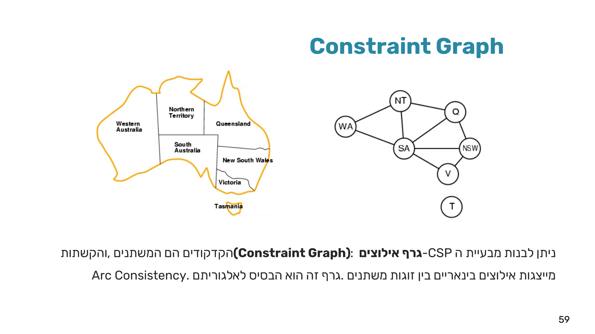
עובדה זו — ש-T מנותקת — אינה רק סקרנות: היא דוגמה לתת-בעיה בלתי תלויה. כל רכיב קשירות בגרף האילוצים אפשר לפתור בנפרד לגמרי ולאחד את הפתרונות בסוף, וזה חוסך המון עבודה. נניח n משתנים, תחום d, ופירוק לתת-בעיות עם c משתנים כל אחת (c קבוע): פתרון כולל ללא פירוק עולה O(dⁿ) — אקספוננציאלי; פתרון מפורק עולה O(d^c · n/c) — לינארי ב-n. לדוגמה מספרית: n=80, d=2, c=20 — ללא פירוק 2⁸⁰≈10²⁴ פעולות (כ-4 מיליארד שנה בקצב 10M nodes/sec!), עם פירוק 4·2²⁰≈4M פעולות (0.4 שניות בלבד).
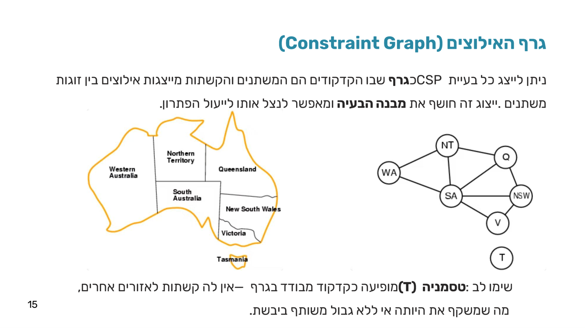
מקור: 07-csp.pdf (עמ' 59), 08-csp-2.pdf (עמ' 15–17)
5. למה חיפוש נאיבי מתפוצץ — ומה ההבחנה שמצילה אותנו
בגישה הנאיבית ביותר, בכל שלב אפשר להשים כל ערך לכל משתנה שטרם הושם. עבור צביעת המפה (3 צבעים): ברמה 1 יש 9 אפשרויות (7 משתנים × 3 ערכים — נדגים עם שלושה מהם: Q, V, NT), ברמה 2 כבר פחות ערכים אך יותר משתנים אפשריים וכן הלאה. באופן כללי — n משתנים ו-d ערכים נותנים ברמה הראשונה nd אפשרויות, ברמה השנייה d(n-1), וכן הלאה. סה"כ עלים: n!·d ⁿ — מספר עצום.
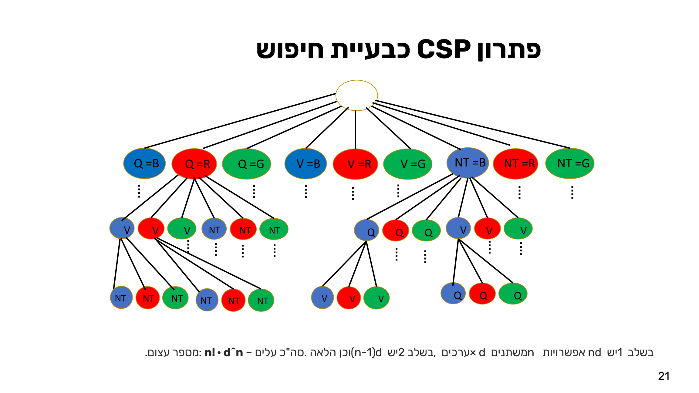
ההבחנה המצילה: ב-CSP, סדר השמת הערכים למשתנים אינו משנה — חשוב רק אילו ערכים הושמו, לא באיזה סדר. שני מסלולים שונים בעץ הנאיבי (למשל Q=R→V=B→NT לעומת NT=B→V=B→Q=R) מובילים לאותה השמה סופית בדיוק.
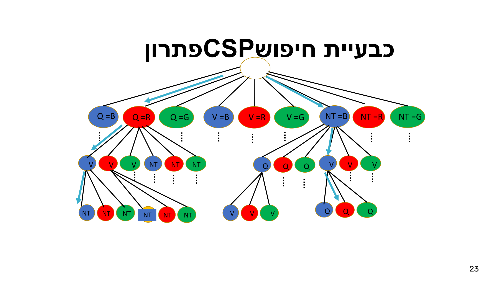
אם כך — מספיק שרק משתנה אחד יקבל השמה בכל רמה. גורם הפיצול הופך מ-nd ל-d בלבד, וסה"כ העלים בעץ המשופר: dⁿ — שיפור אקספוננציאלי!
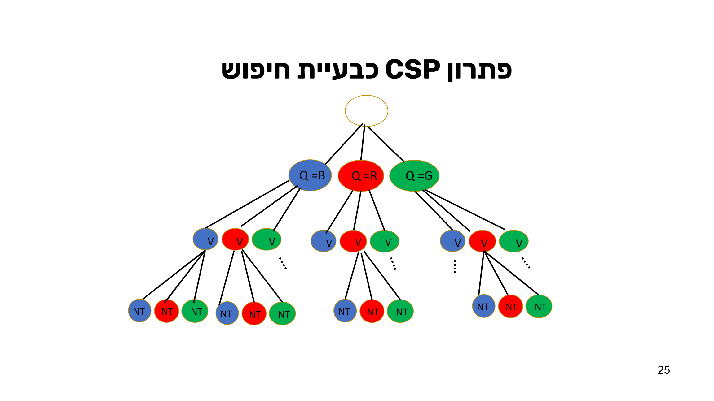
מקור: 07-csp.pdf (עמ' 20–26)
6. Backtracking Search — DFS עם נסיגה
כיוון שאורך המסלול בעץ המשופר ידוע מראש (n — מספר המשתנים), אפשר להפעיל DFS פשוט: אין צורך בעלות מסלול אופטימלית, ואין צורך לשמור את המסלול לפתרון — ההשמה הסופית היא הפתרון. Backtracking Search הוא בדיוק זה: DFS על עץ ה-CSP שבו בכל שלב מושם ערך למשתנה אחד בלבד. אם ההשמה מפרה אילוץ — מנסים ערך אחר; אם אין ערכים נוספים לנסות — נסוגים לרמה הקודמת ומשנים שם.
ארבעה שלבים חוזרים בכל צומת בעץ:
- בחר משתנה (שטרם הושם)
- נסה ערך (מתוך התחום)
- בדוק עקביות (מול ההשמה הנוכחית)
- המשך/נסוג (לפי תוצאת הבדיקה)
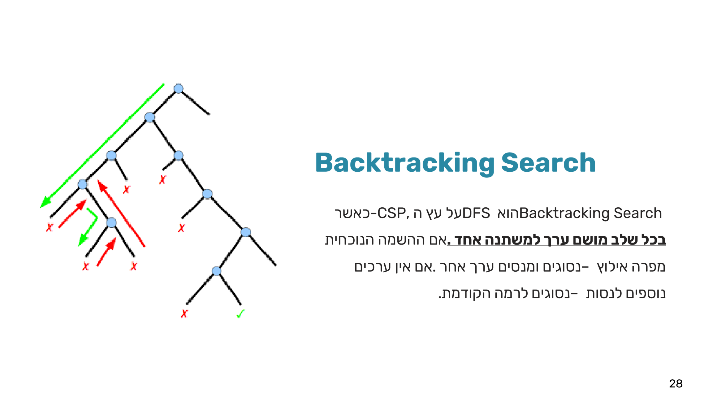
הפסאודו-קוד (מילה במילה מהמקור):
BacktrackingCSP(assignment, csp)
{ if assignment is complete
return assignment
var = SelectUnassignedVariable(Vars[csp], assignment, csp)
for each value in DomainValues(var, csp)
if value is consistent with assignment
{ add {var = value} to assignment
result = BacktrackingCSP(assignment, csp)
if result ≠ failure, return result
else remove {var = value} from assignment }
return failure
}
שימו לב: הבדיקה if value is consistent with assignment נעשית לפני ההוספה להשמה. אם הקריאה הרקורסיבית נכשלת — מבצעים remove {var = value} (זו בדיוק פעולת הנסיגה). מחזירים failure רק אחרי שכל ערכי התחום נוסו ונכשלו.
הרצה על אוסטרליה, צעד-צעד: מ-WA=red נבחנים רק NT=green ו-NT=blue (לא NT=red — מפר את WA≠NT).
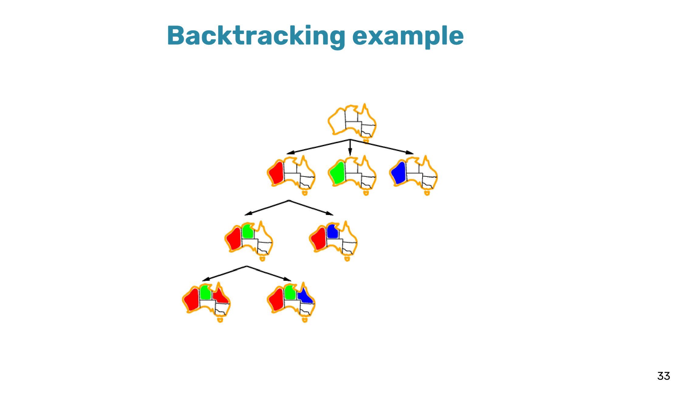
מהצומת {WA=red, NT=green, Q=blue} כל ההמשכים מפרים אילוץ — מבוי סתום, יש לסגת:
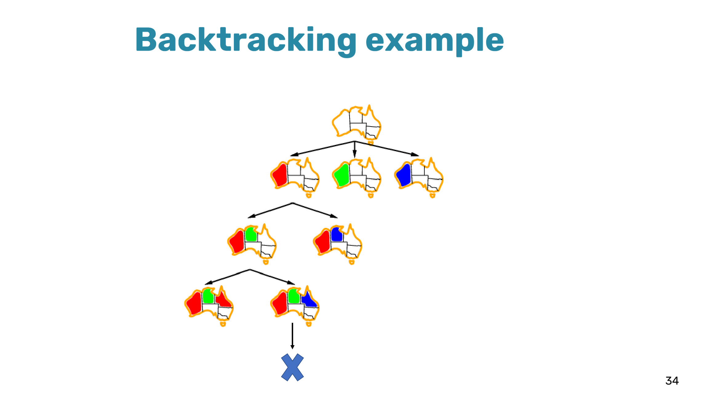
נסו את זה בעצמכם — לחצו על מדינות במפה האינטראקטיבית וראו איך Backtracking בוחר, נתקע וחוזר:
Backtracking הוא חיפוש uninformed — כללי לכל CSP, בלי צורך בידע ספציפי לבעיה, ויכול לפתור את בעיית ה-n-מלכות עד n≈25. אבל בלי שיפורים הוא חוקר המון ענפים כושלים ללא תועלת — כפי שממחיש עץ ה-4-מלכות המלא:
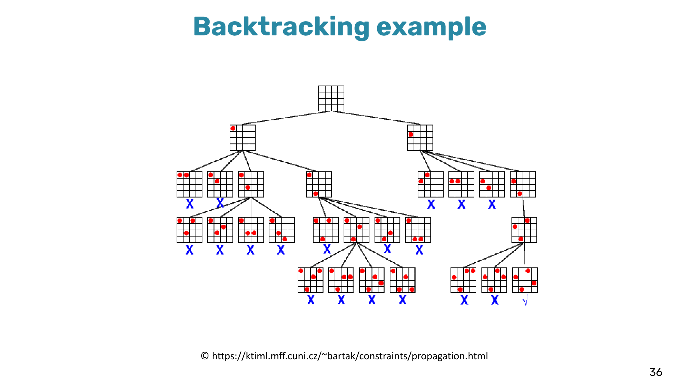
מקור: 07-csp.pdf (עמ' 27–35), 08-csp-2.pdf (עמ' 36–37)
7. תרגיל כיתה — Backtracking על נוסחה לוגית (בלי שיפורים)
CSP לא חייב להיות גיאוגרפי. תרגיל כיתה קלאסי: האם הנוסחה הלוגית הבאה ניתנת לסיפוק (Satisfiable)?
(A∨C) ∧ (A'∨C) ∧ (B∨C') ∧ (A∨B')
ניסוח כ-CSP: משתנים A, B, C, תחום {T, F} לכל אחד, ואילוץ אחד לכל פסוקית (זוגות "או"):
- A=T או C=T (מ-A∨C)
- A=F או C=T (מ-A'∨C)
- B=T או C=F (מ-B∨C')
- A=T או B=F (מ-A∨B')
פותרים ב-Backtracking בסיסי (בלי שיפורים), בסדר משתנים אלפביתי (A→B→C), כשבכל משתנה מנסים קודם F ואז T:
- A=F: B=F → C=F מפר אילוץ 1, C=T מפר אילוץ 3 → נסיגה. B=T מפר אילוץ 4 מיד → נסיגה מכל הענף A=F.
- A=T: B=F → C=F מפר אילוץ 2, C=T מפר אילוץ 3 → נסיגה. B=T → C=F מפר אילוץ 2, C=T — כל האילוצים מתקיימים!
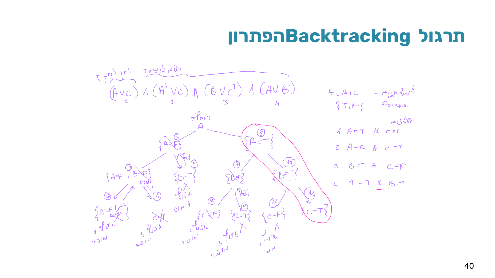
מסקנה: הנוסחה ספיקה עם A=T, B=T, C=T — אחרי 12 צמתים בעץ הריצה. בהמשך נראה איך אותה בעיה נפתרת מהר בהרבה עם MRV, LCV ו-Forward Checking.
מקור: 08-csp-2.pdf (עמ' 38–40)
8. שיפור 1 — Minimum Remaining Values (MRV) ו-Degree Heuristic
הפסאודו-קוד הבסיסי משאיר שתי החלטות פתוחות: SelectUnassignedVariable (איזה משתנה לבחור?) ואת סדר הערכים בלולאת DomainValues (באיזה סדר לנסות אותם?). שלוש שיטות כלליות — שלא תלויות בבעיה הספציפית — משפרות את שתי ההחלטות האלה בצורה דרמטית:
| # | שיטה | תיאור |
|---|---|---|
| 1 | בחירת משתנה | MRV: בחרו את המשתנה עם הכי מעט ערכים חוקיים. |
| 2 | סדר ערכים | LCV: בחרו את הערך שפוסל הכי פחות אפשרויות לשכנים. |
| 3 | ניבוי כישלון | Forward Checking ו-Arc Consistency מזהים כישלון מוקדם. |
Minimum Remaining Values (MRV) (נקראת גם Most Constrained Variable): בחרו תמיד את המשתנה שלו הכי מעט ערכים חוקיים נותרו בתחומו. זו אסטרטגיית "fail-first" — הענף הכי מאוים לכישלון מטופל ראשון: אם למשתנה נותר ערך יחיד, כדאי להשים אותו עכשיו ולא לגלות את הסתירה מאוחר יותר; ואם נותרו לו 0 ערכים — נגלה זאת ונסוג מהר, לפני שביזבזנו זמן על ענפים אחרים.
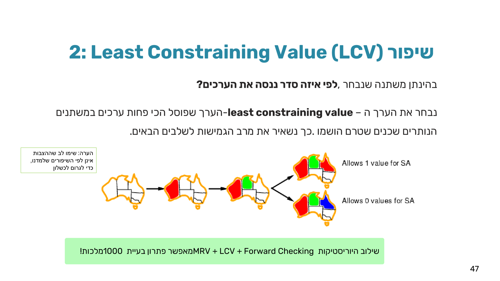
שובר שוויון — Most Constraining Variable (Degree Heuristic): כשלכמה משתנים יש MRV זהה, בוחרים את המשתנה עם הכי הרבה אילוצים על שאר המשתנים שטרם הושמו. חשוב לזכור: היוריסטיקה הזו חלשה יותר מ-MRV כשמופעלת לבדה — היא רק שיקול שניוני לשבירת שוויון. השילוב של שתיהן יעיל יותר מכל אחת בנפרד.
מקור: 08-csp-2.pdf (עמ' 41–46)
9. שיפור 2 — Least Constraining Value (LCV)
בהינתן משתנה שכבר נבחר — לפי איזה סדר ננסה את הערכים בתחום שלו? Least Constraining Value (LCV) עונה: בחרו את הערך שפוסל הכי פחות ערכים אפשריים אצל השכנים שטרם הושמו — כך משאירים להם את מרב הגמישות לשלבים הבאים.
שימו לב לכיוון ההפוך מ-MRV: במשתנים בוחרים את ה"מוגבל ביותר" (fail-first), אבל בערכים בוחרים את ה"מגביל הכי פחות" (flexibility-first). זו בדיוק ההבחנה שחוזרת כשאלת מלכודת במבחן.
דוגמה על אוסטרליה: אחרי WA=red, NT=green, נבחר עבור Q בין שני ערכים חוקיים:
- Q=red → משאיר ל-SA ערך אחד אפשרי ("Allows 1 value for SA")
- Q=blue → משאיר ל-SA אפס ערכים אפשריים ("Allows 0 values for SA") — יוביל למבוי סתום מיידי!
לכן LCV יבחר עבור Q את red — הערך שמשאיר ל-SA אפשרות המשך.
מקור: 08-csp-2.pdf (עמ' 47)
10. שיפור 3 — Forward Checking
Forward Checking (FC): כאשר משתנה X מקבל ערך, מיד מעדכנים את התחומים של כל שכניו שטרם הושמו — מוחקים ערכים שמתנגשים עם הערך שהוצב ב-X. זה מקדם מידע קדימה (למשתנים עתידיים) ומאפשר לזהות כישלון לפני שממש מגיעים אליו בחיפוש: אם התחום של משתנה כלשהו מתרוקן לגמרי — יודעים מיד לסגת, בלי לבזבז זמן על ההשמה.
טרייס מלא על אוסטרליה (הצבות בכוונה לא לפי היוריסטיקות, כדי להדגים כישלון):
| צעד | WA | NT | Q | NSW | V | SA | T |
|---|---|---|---|---|---|---|---|
| התחלה | R G B | R G B | R G B | R G B | R G B | R G B | R G B |
| WA=R | R | G B | R G B | R G B | R G B | G B | R G B |
| Q=G | R | B | G | R B | R G B | B | R G B |
| V=B | R | B | G | R | B | ∅ ריק! | R G B |
אחרי WA=R נמחק אדום מהתחומים של השכנים NT, SA. אחרי Q=G נמחק ירוק מ-NT, NSW, SA — כעת ל-NT ול-SA נשאר רק כחול. אחרי V=B, בבדיקת השכן SA נמחק ממנו הכחול היחיד שנותר — תחום ריק! Forward Checking מזהה את הכישלון מיד, בלי להמשיך את החיפוש עמוק יותר.
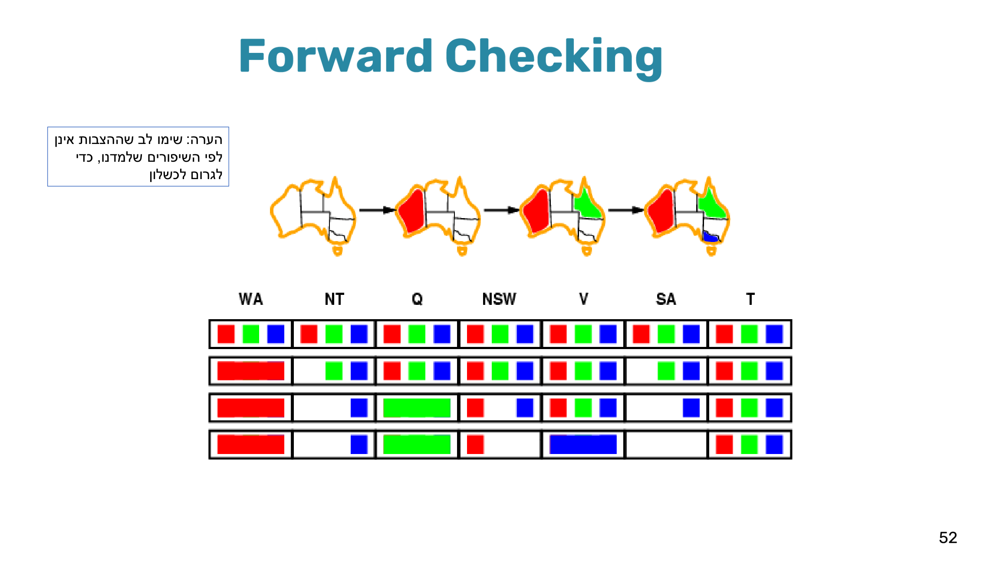
מקור: 08-csp-2.pdf (עמ' 48–52, 57)
11. Backtracking משופר — הפסאודו-קוד ודוגמת מבחן מלאה
הפסאודו-קוד המשופר משלב את שלושת השיפורים:
BacktrackingCSP(assignment, csp)
{
if assignment is complete
return assignment
var = SelectMostConstrainedUnassignedVar(Vars[csp], assignment, csp) // MRV + Most Constraining Variable
for each value in DomainValues(var, csp) // Least Constraining Value first
if value is consistent with assignment
{ DomainValues = ForwardChecking(assignment, csp, var=value)
if every domain is non-empty
{ add {var = value} to assignment
result = BacktrackingCSP(assignment, csp)
if result ≠ failure
return result
else remove {var = value} from assignment } }
return failure
}
דוגמת מבחן מלאה — ניסוח ופתרון: נתונה הנוסחה (D∨B∨A') ∧ (D'∨C'∨A) ∧ (C∨B') ∧ (D∨B'∨A) ∧ (C'∨A'∨B). בדיוק כמו בכל שאלת חלק ב', השלב הראשון הוא ניסוח פורמלי:
- Variables: A, B, C, D
- Domain: {T, F} לכולם
- Constraints (אילוץ לכל פסוקית):
1. D=T or B=T or A=F 2. D=F or C=F or A=T 3. C=T or B=F 4. D=T or B=F or A=T 5. C=F or A=F or B=T
הרצת Backtracking משופר, צעד-צעד (מילה במילה מהפתרון הרשמי):
- לכל המשתנים אותו גודל תחום (2), אז לפי Degree בוחרים משתנה במקסימום אילוצים — A או B; נבחר A. מחצית האילוצים רוצים A=T ומחציתם A=F — אין יתרון ל-LCV, מציבים רנדומלית A=T. Forward checking: אין שינוי בתחומי האחרים — באילוצים 1 ו-5 יש עדיין אפשרויות אחרות לסיפוק.
- שוב שוויון בגודל תחום — בוחרים B (Degree). שוב אין יתרון ל-LCV — מציבים רנדומלית B=T (עם A=T). Forward checking: אילוצים 1,2,4,5 מסופקים ללא השפעה נוספת; אבל בשל אילוץ 3 (C=T or B=F), עם B=T נמחק F מהתחום של C.
- כעת C הוא MRV — תחומו צומצם ל-{T} בלבד. מציבים C=T. Forward checking: אין שינוי נוסף — כל האילוצים עם C מסופקים.
- נשאר רק D. נותנים לו את הערך שהכי פחות מפריע לשאר: D=T (עוזר לשניים מתוך שלושת האילוצים שבהם D מופיע). ההשמה {A=T, B=T, C=T, D=T} מספקת את הנוסחה כולה — עוצרים ומחזירים אותה.
מקור: 08-csp-2.pdf (עמ' 42–43); דוגמת המבחן: ex06.pdf, sol06.pdf (עמ' 1–2)
12. השוואה כוללת ומלכודות למבחן
| שיטה | סוג ההחלטה | מה משפרים |
|---|---|---|
| MRV | בחירת משתנה | Fail-first — לגלות כישלון מוקדם ככל האפשר |
| Degree (Most Constraining Variable) | בחירת משתנה (שובר שוויון) | להקטין את מרחב האפשרויות למשתנים עתידיים |
| LCV | בחירת ערך | להשאיר גמישות מקסימלית לשכנים |
| Forward Checking | ניבוי כישלון (אחרי כל השמה) | לזהות תחום שהתרוקן מיד, לפני שממשיכים לעומק |
מקור: 07-csp.pdf, 08-csp-2.pdf (סיכום היחידה)
13. תרגיל הבית — תרגיל 5 (שאלות 2–3, ניסוח CSP ו-Backtracking)
הורדות: שאלת התרגיל (ex05.pdf) · הפתרון המלא (sol05.pdf).
שאלה 2 — ניסוח 4-מלכות כ-CSP
[30 נקודות] תהי בעיית 4-מלכות: נתון לוח של 4X4 שבו צריך לשבץ 4 מלכות כך שלא תהיינה 2 מלכות באותה שורה, באותו טור, או באותו אלכסון. פונקציית העוקב מוסיפה ללוח מלכה בטור חדש. הגדירו את הבעיה כבעיית סיפוק אילוצים באופן פורמאלי (משתנים, תחום ערכים ואילוצים).
שאלה 3 — Backtracking על 3-מלכות
[40 נקודות] תהי בעיית 3-מלכות: נתון לוח של 3X3 שבו צריך לשבץ 3 מלכות כך שלא תהיינה 2 מלכות באותה שורה, באותו טור, או באותו אלכסון. פונקציית העוקב מוסיפה ללוח מלכה בטור חדש. (ראו דוגמא להרצה במצגת) הפעילו על הבעיה את אלגוריתם ה-Backtracking. מה הוא יחזיר?
שאלה 2 — ניסוח פורמלי:
- משתנים: 4 משתנים Qᵢ כאשר 1 ≤ i ≤ 4 — i מציין את הטור בו נמצאת המלכה, ו-Qᵢ מייצג את השורה בה נמצאת אותה מלכה.
- תחום הערכים למשתנים: {1,2,3,4}.
- אילוצים:
- שלא תהיינה מלכות באותה שורה: Qᵢ ≠ Qⱼ עבור כל i ≠ j.
- שלא תהיינה 2 מלכות באותו אלכסון — הפרשי הטור והשורה זהים: |Qᵢ − Qⱼ| ≠ |i − j| עבור כל i ≠ j.
- האילוץ ששתי מלכות אינן באותו טור מטופל ממילא בעצם קביעת המשתנים — כל מלכה כבר משויכת לטור אחר.
שאלה 3 — הרצת Backtracking על 3-מלכות: בכל רמה האלגוריתם מנסה להוסיף מלכה חדשה בטור חדש. בכל צעד מוסיף את המלכה בשורה אחרת. רק אם היא עומדת באילוצים — לא מאיימת על מלכה קיימת — ממשיכים לשלב הבא. אם נתקעים, חוזרים אחורה ומבטלים את ההצבה האחרונה.
- מלכה בטור 1, שורה עליונה. שני נסיונות לטור 2 נכשלים (שורה/אלכסון); הנסיון השלישי (שורה תחתונה) חוקי — אבל כל שלושת הנסיונות לטור 3 נכשלים → נסיגה מלאה מהענף.
- מלכה בטור 1, שורה אמצעית. שלושת הנסיונות לטור 2 נכשלים (שורה/אלכסון) → נסיגה.
- מלכה בטור 1, שורה תחתונה. נסיון ראשון לטור 2 (שורה עליונה) חוקי — אבל כל שלושת הנסיונות לטור 3 נכשלים; שני הנסיונות הנותרים לטור 2 נכשלים גם הם → נסיגה מלאה.
סה"כ נבדקו 19 קודקודים בעץ הריצה, וכל שלוש האפשרויות למלכה הראשונה מוצו ללא הצלחה. האלגוריתם יחזיר כישלון, כיוון שאין מסלול של הצבות שמקיים את כל האילוצים — לבעיית 3-המלכות אין פתרון.
מקור: ex05.pdf (עמ' 1), sol05.pdf (עמ' 2–3)
14. בדיקה עצמית
איזו מהבאות היא ההגדרה הנכונה של "פתרון CSP"?
מדוע גודל עץ החיפוש הנאיבי (n!·dⁿ) מצטמצם ל-dⁿ בגישה החכמה של CSP?
בפסאודו-קוד הבסיסי של Backtracking, מה קורה כשהקריאה הרקורסיבית מחזירה failure עבור ערך שהושם?
מהי אסטרטגיית ה-"fail-first" שעליה מבוססת MRV?
מדוע LCV (Least Constraining Value) פועל בכיוון ההפוך מ-MRV?
בדוגמת אוסטרליה, אחרי ההצבות WA=אדום, Q=ירוק, V=כחול (בסדר הזה) — מה מגלה Forward Checking?
בניסוח SEND+MORE=MONEY כ-CSP, מדוע נדרש אילוץ נפרד M≠0 ו-S≠0 מלבד ה-Alldiff?
שילוב אילו שלוש שיטות שיפור מאפשר, לפי המרצה, לפתור בעיית 1000-מלכות?
סיימתם את הפרק? סמנו אותו כהושלם: